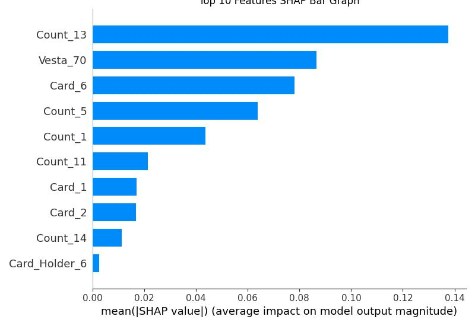
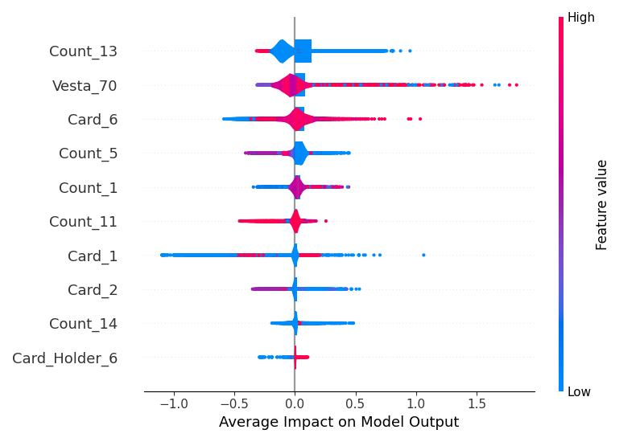

Model Performance Metrics
The fraud detection model reached performance levels consistent with real-world systems, maintaining a practical balance between identifying fraud and reducing false positives.
Performance Radar Analysis
Key Insight: The Real-World Logic Behind Fraud Detection Metrics
In credit card fraud detection, there's a fundamental trade-off between two goals:
- Catching as much potential fraud as possible (high recall)
- Only flagging transactions you're sure about (high precision)
Real-world systems prioritize high recall because the cost of missing fraud, a false negative case, is much higher than the cost of a false alarm, a false positive case.
The model's performance (~60% recall and ~30% precision) follows business logic and make financial sense due to the following of reasons:
- A single missed fraud can cost hundreds of dollars in direct losses
- A false alarm typically costs just a few dollars in customer service time
- Even at 30% precision, the value of prevented fraud far outweighs the cost of investigating false alerts
Business Impact
This strategic balance allows financial institutions to minimize major financial losses from undetected fraud while maintaining operational efficiency. The occasional false positive is treated as an acceptable cost of doing business compared to the alternative of letting more fraud slip through.
Feature Importance Analysis
SHAP was used to interpret the models and identify the most important features for their predictions.
The analysis reveals which factors have the greatest impact and the nature of their influence.
Figure 1. SHAP summary bar chart. Top 10 features that influenced the detection model the most, from the most impactful to the least.

Figure 2. SHAP summary violin graph. Top 10 features that influenced the detection model the most, from the most impactful to the least.

Top Predictive Features
The models' decisions are driven primarily be as core set of features, with the following categories having the highest average impact:
- General Counting (Count_13, Count_5, Count_1, Count_11, Count_14): The number of unique contact points.
A single card being used across many different devices, IP addresses, or shipping addresses can increase chances of triggering the fraud detection.
- Vesta Engineered Feature (Vesta_70): Spending patterns analysis make by the financial technology companies.
It detects subtle, suspicious patterns that are hard for humans to spot.
- Credit Card Information (Card_6, Card_1, Card_2): The specific details about your payment card.
Fraudsters often use cards from specific high-risk banks or countries.
A transacrtion from a card type or region that is unusual for you can trigger the fraud detection.
- Card User Information (Card_Holder_6): Personal details information such as name, email, and address.
A mismatch of the purchaser personal details with the cardholder's information and your past transactions is a strong sign of identity theft or that a stolen card is being used.
Direction of Influence
Figure 2 shows not only the impact but also the direction. For the top features like "Count_13" and "Vesta_70":
- High feature values, color red, consistently increase the model's output score, making a positive prediction, fraudulent transaction, more likely.
- Low feature values, color blue, decrease the model's output score, making a negative predition, non fraud, more likely.